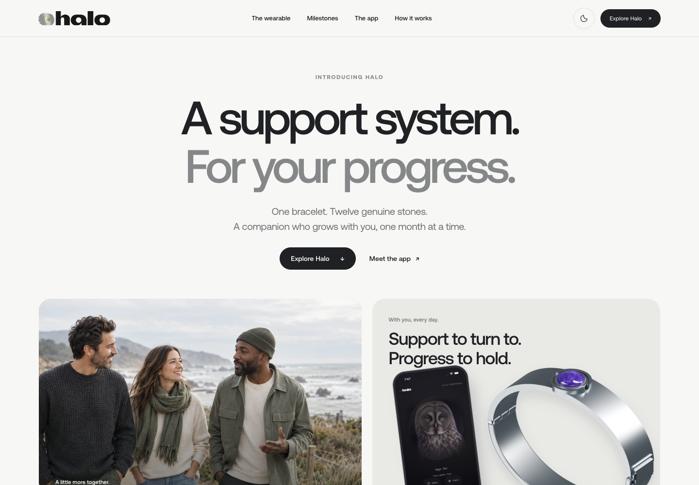
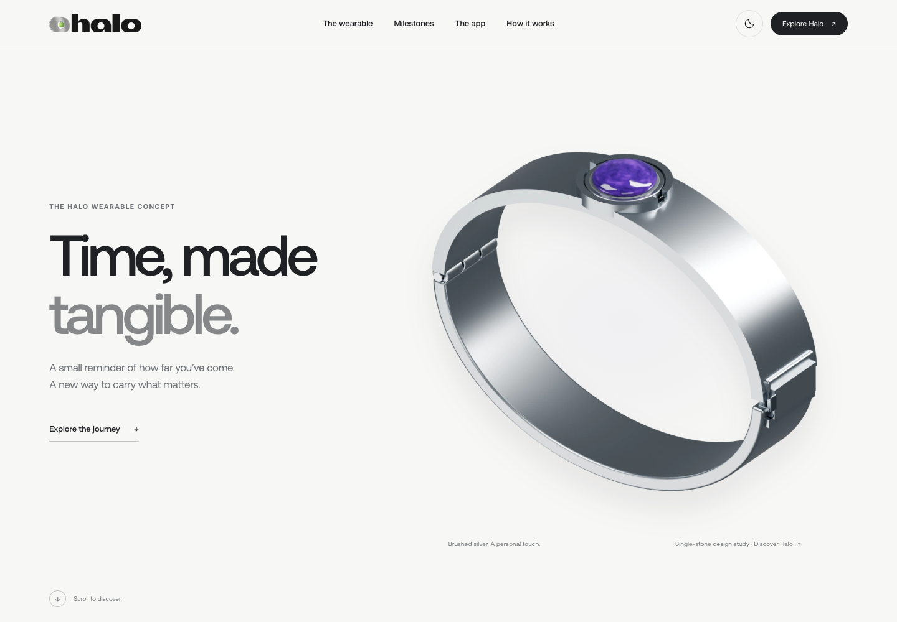
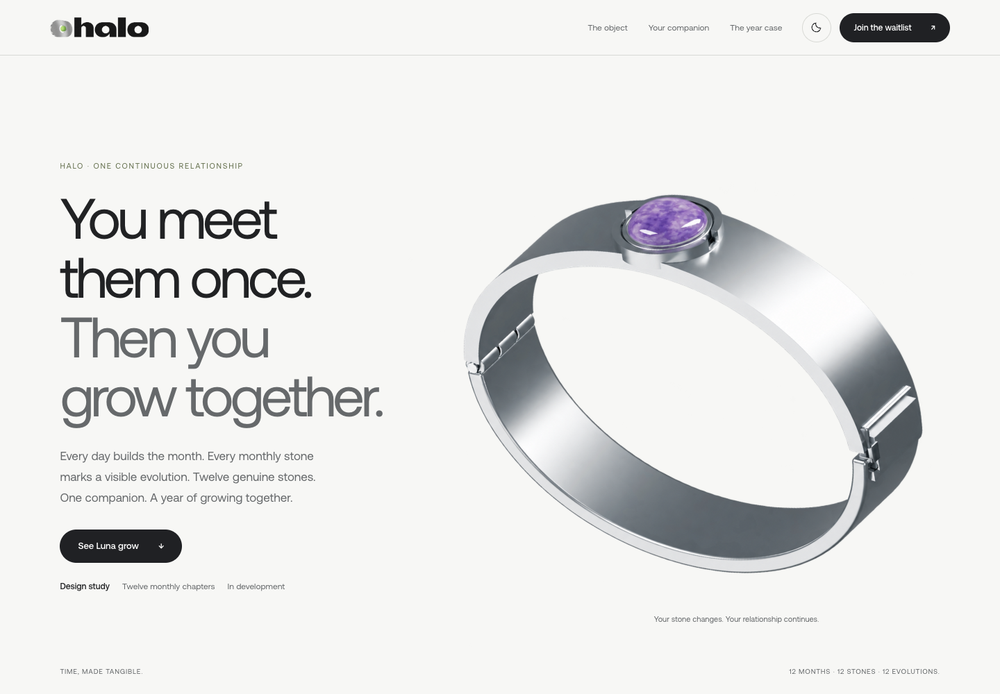
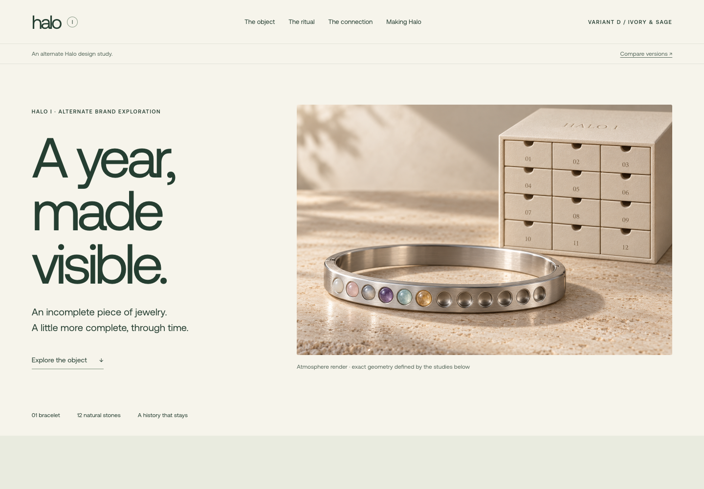

A / SUPPORT SYSTEM
A support system.
For your progress.
People, wearable, and Luna’s twelve-month evolution.
Open version A ↗HALO / DESIGN COMPARISON
B is the main landing page. Each alternative has its own permanent URL for review and direct traffic tests.

A / SUPPORT SYSTEM
People, wearable, and Luna’s twelve-month evolution.
Open version A ↗
B / MAIN SITE
The minimal amethyst hero, mineral explorer, and new Halo I story.
Open version B ↗
C / GROWING TOGETHER
A deeper companion story, monthly chapters, and year-case exploration.
Open version C ↗
D / IVORY & SAGE
A warmer product story, keepsake cabinet, and interactive ritual.
Open version D ↗These are saved design directions. Earlier imagery and material studies are retained for comparison; the main site describes the current Halo I proposal. All signup links lead to the same Halo waitlist.